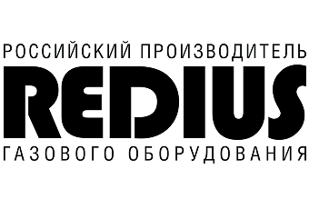

Материал компании

MITEX 2026 · Россия · Стенд 7D804
ООО "Редиус 168"
Карточка проверена 10 ноября 2026, 09:25 · Источник ↗ · Снимок оригинальной карточки ↗
О компании
ООО «Редиус 168» работает с 2000 года и производит газорегулирующее и газопламенное оборудование: редукторы и регуляторы расхода, резаки и горелки, предохранительные затворы и клапаны, баллонные вентили. Серийно выпускаем более 400 наименований, каталог закрывает газовый пост целиком — от вентиля на баллоне до мундштука на резаке. Более 15 000 м² производственных площадей. Более миллиона единиц продукции в год. Гарантия на изделия — 18 месяцев. Поставки во все регионы России, а также в Казахстан, Беларусь, Кыргызстан, Азербайджан и Узбекистан.
Контакты
Все контактные сведения из карточки
Контакты ООО "Редиус 168" Телефон: +7(812) 325 58 88 E-mail: redius@redius.spb.ru Адрес: 195277, Россия, Санкт-Петербург, Санкт-Петербург, Крапивный переулок д. 4 Веб-сайт: https://redius.spb.ru/ E-mail: redius@redius.spb.ru Телефон: +7(812) 325 58 88
Все рубрики участника
Mitex - Рубрикатор
- 3. Сварочное оборудование, расходные материалы, СИЗ
- 6. Инструменты и оборудование для обработки и резки металла, проволоки, труб, камня, стекла, керамики, пластмасс, дерева
Зал
- Зал № 7
Участник выставки
- MITEX
Фотографии и изображения
Видео, каталоги и документы
Материал компании
Каталог Redius.pdf
Открыть у участника ↗Каталог продукции участника
Материалы каталога
Презентация Redius Каталог продукции Redius
Презентация Redius
Презентация Redius Вложения Презентация.pdf 30.10.2026 0 16.7 MB
Каталог продукции Redius
Каталог продукции Redius Вложения Каталог Redius.pdf 30.10.2026 1 17.37 MB